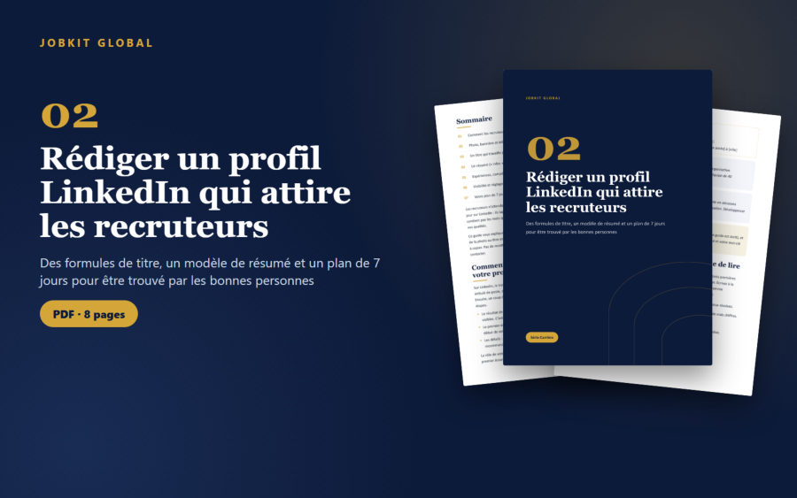

Série Carrière
Rédiger un profil LinkedIn qui attire les recruteurs
Des formules de titre, un modèle de résumé et un plan de 7 jours pour être trouvé par les bonnes personnes

Les recruteurs n'attendent pas seulement les candidatures. Beaucoup d'entre eux cherchent chaque jour sur LinkedIn : ils tapent des mots-clés, filtrent par ville et par intitulé de poste. Si votre profil ne contient pas les mots qu'ils recherchent, vous n'apparaissez tout simplement pas, quelles que soient vos qualités.
Ce guide vous explique comment un recruteur lit réellement un profil, puis reprend chaque rubrique, de la photo au titre en passant par les expériences, avec des formules, des exemples et des modèles à copier. Pas de recette miracle ni de jargon : un profil clair et honnête, qui donne envie de vous contacter.
Obtenir le guide complet
PDF imprimable avec toutes les parties, les modèles et la check-list. Téléchargement immédiat.
Comment les recruteurs trouvent et lisent votre profil
Sur LinkedIn, le travail d'un recruteur se fait souvent en deux temps. D'abord une recherche : un intitulé de poste, quelques compétences, une localisation, puis une liste de résultats à parcourir. Ensuite, un coup d'œil rapide aux profils qui semblent correspondre. Votre profil doit réussir ces deux étapes.
- Le résultat de recherche seuls votre photo, votre nom, votre titre et votre localisation sont visibles. C'est là que se joue le clic.
- Le premier écran une fois votre profil ouvert, le recruteur voit votre bannière, votre titre, le début de votre résumé et votre poste actuel. La plupart des décisions se prennent ici.
- Les détails si vous l'intéressez, il descend pour vérifier vos expériences, vos compétences et vos recommandations.
Le rôle de votre profil est donc simple : employer les mots que les recruteurs recherchent, rendre le premier écran limpide, et appuyer chaque affirmation par des preuves concrètes un peu plus bas.
Photo, bannière et informations de base
La partie visuelle de votre profil ne demande pas d'avoir l'air d'un mannequin. Il s'agit de paraître accessible et professionnel, et de montrer que le profil est bien réel et à jour.
- Photo un portrait récent, visage et épaules, avec une bonne lumière (face à une fenêtre, c'est idéal), un fond neutre et un sourire naturel. Votre visage doit occuper l'essentiel du cadre.
- Bannière remplacez le fond par défaut par une image liée à votre métier : votre ville, votre environnement de travail, ou un visuel simple avec une phrase sur ce que vous faites.
- Localisation indiquez la ville ou la région où vous souhaitez travailler. Les recruteurs filtrent par zone géographique, et une mauvaise localisation peut vous rendre invisible.
- URL personnalisée dans les paramètres de votre profil public, modifiez l'adresse pour obtenir quelque chose comme linkedin.com/in/prenom-nom. Ajoutez-la sur votre CV et dans votre signature de mail.
- Coordonnées ajoutez une adresse e-mail professionnelle pour qu'un recruteur puisse vous écrire en dehors de LinkedIn.
Un titre qui travaille pour vous
Par défaut, LinkedIn remplit votre titre avec votre poste actuel et votre entreprise. C'est une occasion manquée, surtout si votre intitulé est flou ou propre à votre société. Votre titre apparaît partout : dans les résultats de recherche, sous vos commentaires, dans vos invitations. Il doit dire ce que vous faites, pour qui, et avec quel point fort, en reprenant vos mots-clés.
La suite dans le guide complet
Un résumé (« Infos ») que l'on a envie de lire
La rubrique Infos, c'est votre histoire, racontée avec vos mots. Seules les deux ou trois premières lignes s'affichent avant le lien « voir plus » : elles doivent donner envie de continuer. Écrivez à la première personne, faites des paragraphes courts et bannissez les adjectifs creux comme « dynamique », « motivé » ou « passionné », sauf si vous les prouvez dans la foulée.
La suite dans le guide complet
Expériences, compétences et preuves
Votre rubrique Expérience ne doit pas être un copier-coller de votre fiche de poste. Le recruteur veut savoir ce qui a changé grâce à vous. Pour chaque poste récent, écrivez une ligne de contexte, puis trois à cinq puces qui commencent par un verbe d'action et se terminent par un résultat.
La suite dans le guide complet
Visibilité et réglages : être facile à trouver
Un excellent profil ne sert à rien si les recruteurs ne le voient pas ou ignorent que vous êtes ouvert à une discussion. Quelques réglages et de petites habitudes changent beaucoup de choses.
La suite dans le guide complet
Votre plan de 7 jours pour refaire votre profil
La suite dans le guide complet
Votre profil LinkedIn travaille pour vous même quand vous dormez. Consacrez-lui une semaine pour le rendre clair et honnête, et laissez les bons recruteurs venir à vous.
Ce que contient le guide complet
- Comment les recruteurs trouvent et lisent votre profil
- Photo, bannière et informations de base
- Un titre qui travaille pour vous
- Un résumé (« Infos ») que l'on a envie de lire
- Expériences, compétences et preuves
- Visibilité et réglages : être facile à trouver
- Votre plan de 7 jours pour refaire votre profil
- Check-list : Avant de partager votre profil
Obtenir le guide complet
PDF imprimable avec toutes les parties, les modèles et la check-list. Téléchargement immédiat.
Besoin d’un CV aussi ?
Le kit JobKit Global : 3 modèles de CV compatibles ATS, 3 lettres de motivation, un tableau de suivi de candidatures et un guide d’entretien.